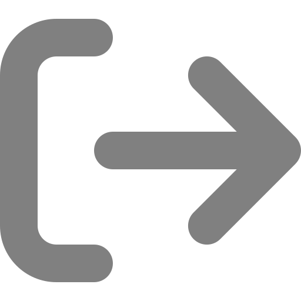

<nav class="navbar1">
  <div class="burger-icon" (click)="toggleSidebar()">
    
  </div>
  <div class="get-started-btn"> 
      
    <div class="date">{{ currentDate | date: 'MMM dd, yyyy hh:mm:ss a' }}</div>
  </div>
</nav>

<!-- Overlay for darkening effect -->
<div class="overlay" *ngIf="isSidebarOpen" (click)="toggleSidebar()"></div>

<!-- Side Navigation -->
<div class="side-nav" [ngClass]="{'active': isSidebarOpen}">
  <div class="logo-container">
    <div class="circle-logo"></div>
    <h1>EventSnap</h1>
    <p>{{ loggedInUser.name }}</p> <!-- Display user course -->
    <p>{{ loggedInUser.course }}</p>
  </div>
  <ul class="nav-links">
    <li routerLink="/events"><a routerLink="/events">Events</a></li>
    <li routerLink="/history"><a routerLink="/history">History</a></li>
    <li routerLink="/about"><a routerLink="/about">About Us</a></li>
  </ul>
  <div class="log-out" (click)="logout()"> <!-- Add click event here -->
    
  </div>
</div>
